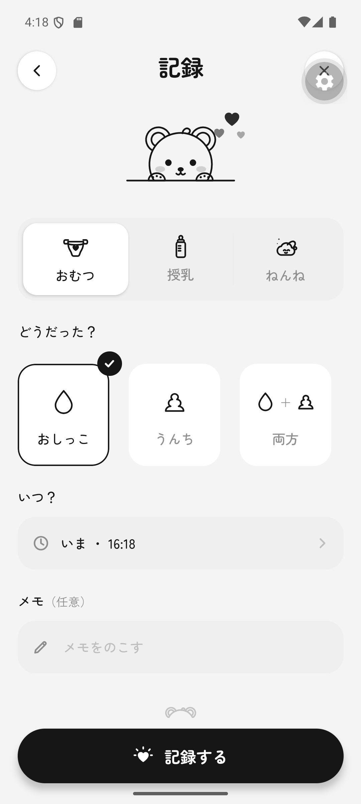
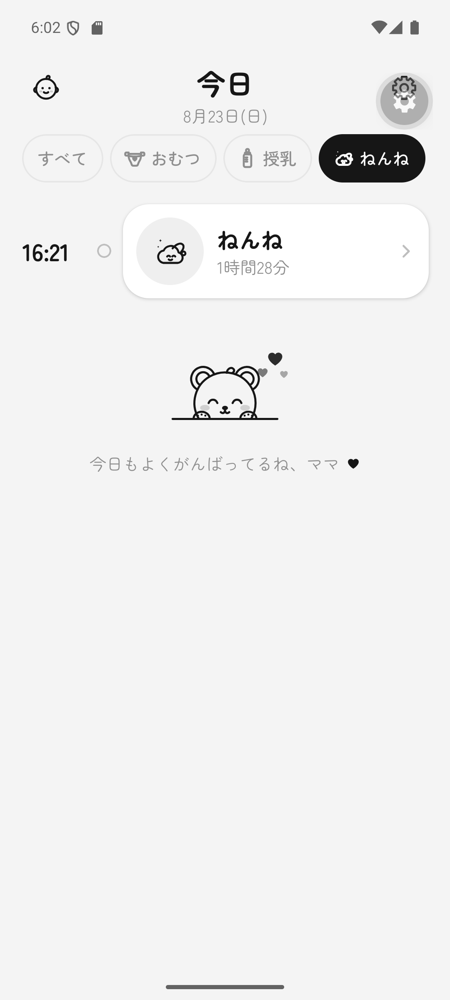
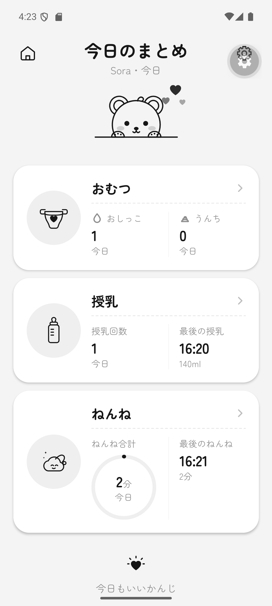
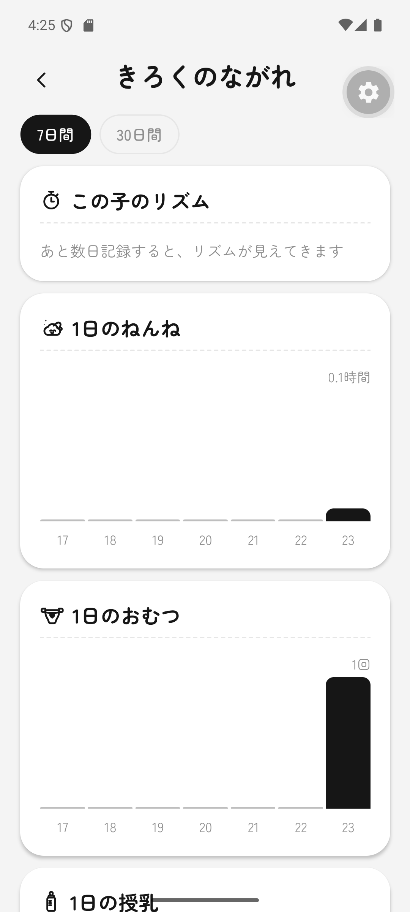

2タップで記録
おしっこ、うんち、ミルク、ねんね。迷う画面を増やさず、よく使う操作を近くに置きました。
必要なものだけ
おしっこ、うんち、ミルク、ねんね。迷う画面を増やさず、よく使う操作を近くに置きました。
アカウントもクラウドもありません。ログは端末のローカルデータベースに保存されます。
タイムライン、今日のまとめ、記録の流れ。細かく分析するより、次に必要なことが分かります。
HOW IT WORKS
記録のために、生活を止めなくていいように。
おむつ、授乳、ねんねから選びます。
ミルクは量、母乳とねんねはタイマー。メモや時刻はあとからでも大丈夫です。
保存したらホームへ。今日の記録と、赤ちゃん自身のリズムを見られます。
THE SCREENS




PRIVATE BY DEFAULT
ねんねノートはローカルのSQLiteデータベースを使います。アカウントも、ログをサーバーへ送る同期もありません。
FAQ
はい。記録と閲覧は端末内で完結します。ネットワークを使うのは、選んで開いたサポートリンクだけです。
おむつ（おしっこ・うんち）、ミルク、母乳、ねんねを記録できます。成長の計測や「はじめて」の記録もあります。
ソースコードとセットアップ方法をGitHubで公開しています。ストア向けの署名済みビルドが用意できたら、このページにインストールリンクを追加します。
いいえ。表示する目安は一般的な参考情報です。心配なことは小児科にご相談ください。